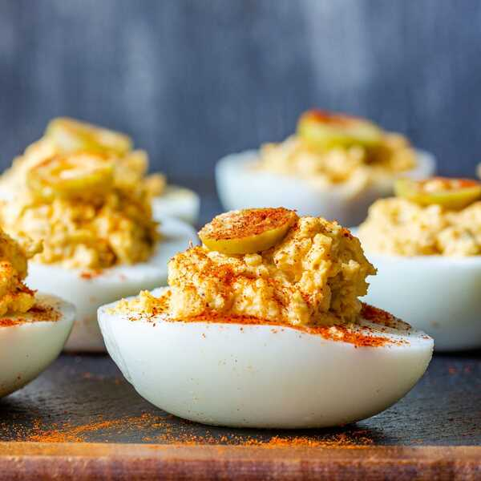

Deviled Eggs!
Deviled Eggs!

Quick And Easy Deviled Eggs Courtesy of My Mom
Deviled Eggs are a flexible and fun food that can wear many hats. From a quick and easy way to satiate guests arriving to a dinner party, to a nutritious and tasty breakfast, deviled eggs are a great all around dish from yesteryear often forgotten about these days.
Below you find a simple recipe that will taste great! There are many ways to make this your own and add your own twang to it!
Ingredients:
- Eggs
- Mayo
- Salt
- Pepper
- Mustard
- Paprika
Optional:
Olives
Jalepeno Slice
Hot Sauce, etc!
How To Make It!
- Boil Eggs-Cover eggs with water and once water is boiling cook for 10 minutes
- Take eggs out and put in an icebath for 10 minutes
- Peel eggs and slice in half
- Remove the yolks and put into a bowl
- Smash the yolks with a fork
- Add mayo, salt, pepper and a shot of mustard and mix together
- Fills the egg white with the mixture you made and top with paprika and anything else you think would be good!